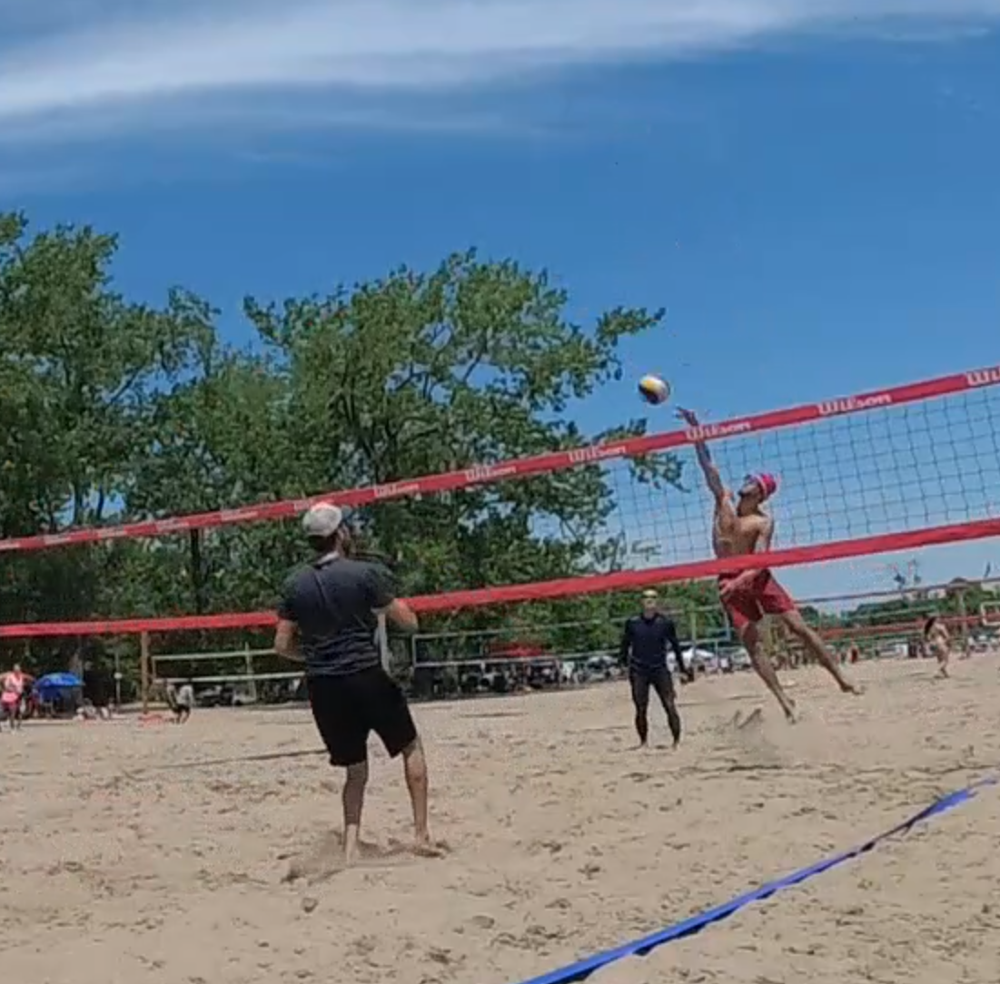
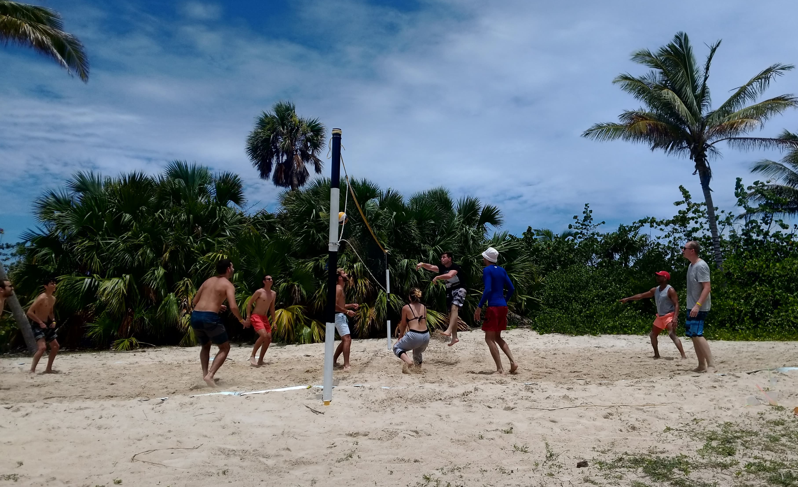
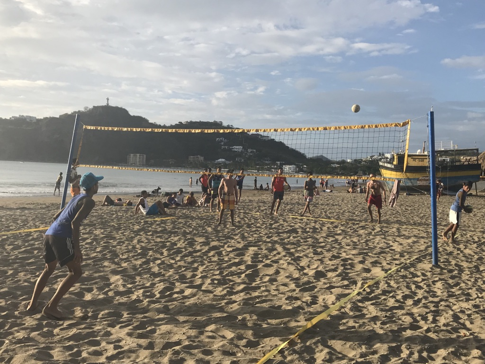

| Canada | Toronto | Woodbine beach | 100s of nets. Facilities |  | |
| Canada | Toronto | Sunnyside | 2 nets. |
| Canada | Toronto | Ontario place | 1 net? |
| Canada | Ontario | Wassaga beach | 2 hours from Toronto. |
| Cuba | Varadero | Los Cactus (4*) | 2 nets. One on the beach and the better one in front of the cafeteria, separated from the beach by trees. Good net, no wind. Animators play volleyball. Some good folks: Tony (Animator supervisor), Dino, Ramon and others. Very decent level of volleyball. If you have, bring your own lines. There are also nets on the beach in the nearby hotels. |  | |
| Cuba | Varadero | Barlavento (3.5*) | there is net, it's ok but not great. |
| Cuba | Cayo Santa Maria | Hotel Meliá Las Dunas | Net is behind a dune, but lots of sharp rocks. |
| Cuba | Cayo Santa Maria | Hotel Melia Cayo Santa Maria next to Las Dunas | Better net and lifeguards play volleyball |
| Nicaragua | San Juan del Sur (SJDS) | Beside Restaurante Vivian | Good net, bad field and very competitive level of play. The net is good and tight, but the field has (had in 2018) a lot of rocks on it, after tides and storms. Nicaraguan olimpic players often play here and thus the level of play is very good. The downside is that most of the people on the court do not speak English and the teens often take over the net for indefinite amount of time. |  | |
| Bahamas | Nassau | Hotel Riu Palace Paradise Island (4*) | has a net |
| Dominican Republic | Punta Cana | Playa Los Corales | There are some nets, but they are not great and the level of play is "drunk/sunburned tourist". |
| Dominican Republic | Playa Macao | no nets, but some surfing and freshly caught fish. |
| Dominican Republic | Las Terrenas | One net on the very tip of the paninsula, hard surface. |
| Dominican Republic | Cabarrette | No nets, only surfing sports |
| Italy | Tirrenia near Pisa | Decent net, but mostly kids playing, near Grand Hotel Continental. |